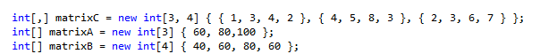

1. Разобрать функции обхода матриц. (map, ever, some и т.п.).
2. Сгенерировать массив случайных чисел типа integer, размером 1 000 000. Отсортироать его по возрастанию и по убыванию. Найти сумму елементов. Вывести результат в консоль( 3 массива, сумма, время работы циклов сортировки и генерации).
3 На скрине дано 3 матрици. А - матрица рядов, Б матрица столбов, С матрица опорного плана( квадратная матрица). Решить транспортную задачу на основе этих матриц методом Северо-Западного угла.
